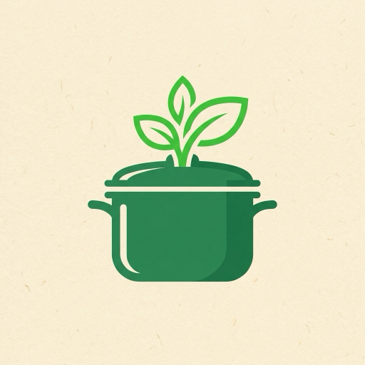
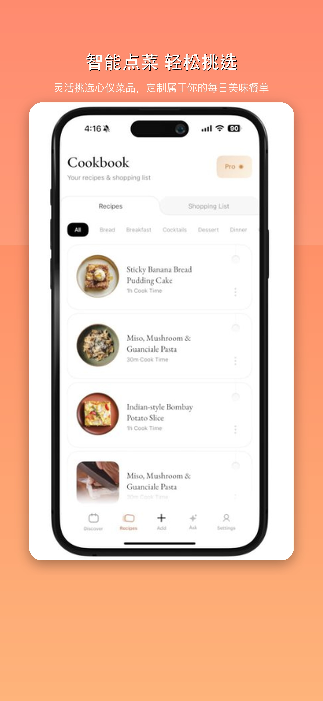

菜谱与点餐助手Cookbook
家常菜谱与点餐记录Smart Meal Planner
家里那几道菜的步骤、用量和买菜清单，一处记清。The recipes your family actually cooks — steps, amounts and a shopping list in one place.
已上线 App StoreLive on the App StoreiOSwatchOS
关于这个应用About
把常做的菜记成一份自己的菜谱：用量、步骤、准备时间都写清楚。要买菜时说一声「点菜」，清单自动汇总；做完还能回头翻时间轴，看看这个月都吃了什么。手表上也能看下一步该做什么。Turn the dishes you cook often into your own cookbook — amounts, steps and prep time, all written down. Order what you want to eat and the shopping list builds itself. A timeline keeps a record of what you've actually made.
主要功能Highlights
- 点菜式下单与买菜清单Order-style picking and shopping list
- 分步引导，做菜时不慌Step-by-step cooking guidance
- 时间轴回顾做过的菜Timeline of everything you've cooked
- watchOS 表上查看步骤Steps on your Apple Watch
